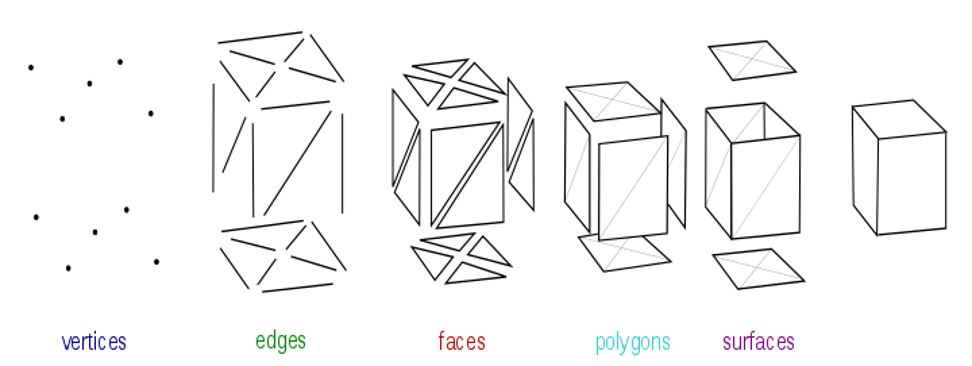

Mesh：電腦怎麼記住一個 3D 模型
- 知道 Mesh 資料 = 一堆頂點 + 哪些頂點組成三角形
- 知道一個頂點除了位置，還帶「屬性」：Normal、UV、Color
- 記得這些屬性是後面幾課的伏筆（Normal→光照、UV→貼圖）
先看：模型其實是一堆三角形

上一課說過：Vertex（頂點）是空間中的點，3 個頂點圍成一個三角形。 那電腦怎麼把整隻模型「存下來」？答案就是一份 Mesh 資料。
為什麼一定是三角形？三個點必定落在同一平面（不會凹凸）、又是最簡單的多邊形， GPU 硬體就是為畫三角形而設計 —— 任何形狀，用夠多三角形都能逼近。
模型從哪來：常見檔案格式
Mesh 通常由美術用 3D 軟體（Blender、Maya…）做好，存成模型檔再匯入引擎。常見格式：
| 格式 | 特點 | 能裝什麼 |
|---|---|---|
| FBX | Autodesk，業界最通用、引擎首選 | Mesh、材質、骨骼、動畫、攝影機（最完整） |
| glTF / GLB | Khronos 開放標準，為實時渲染最佳化，Web 友好 | Mesh、PBR 材質、貼圖、骨骼、動畫 |
| OBJ | 純文字、最簡單 | 只有 Mesh 幾何（+ .mtl 基本材質），無動畫 |
| STL | 三角面幾何，主要用於 3D 列印 | 只有 Mesh 幾何（無 UV / 材質 / 動畫） |
所以一個模型檔常是「一整包」：不只 mesh 幾何，還可能含材質、骨骼、動畫、攝影機。這門課聚焦其中的 Mesh 幾何，其餘等相關主題再說。
Mesh 資料 = 頂點 + 索引
一份 Mesh 其實就兩種東西：
- 頂點資料：每個頂點的位置與屬性
- 索引資料（Index）：哪三個頂點組成一個三角形
用索引指定三角形，可以讓相鄰三角形共用頂點，省記憶體。一個最小的三角形長這樣：
positions = [ -1,-1,0, 1,-1,0, 0,1,0 ] // 3 個頂點的 (x,y,z)
indices = [ 0, 1, 2 ] // 用第 0、1、2 個頂點組一個三角形你不用會寫，只要看懂：這就是「3 個點 + 怎麼連成三角形」。（這些位置是相對模型自己的原點 —— 第 3 課會叫它 Object Space。）
頂點不只有位置：屬性 (Attribute)
每個頂點除了位置 (Position)，還可以帶其他資料，叫頂點屬性。常見的有：
- Position — 位置 (x,y,z)，決定形狀
- Normal — 法向量，垂直表面的方向，光照要用（第 8 課）
- UV — 對應貼圖的座標，貼圖要用（第 7 課）
- Color — 頂點顏色 (RGBA)
攤開來看：真實的 Vertex Buffer + Index Buffer
把一個方形（quad）的四個角、連同全部屬性攤開，實際的資料長這樣：
// Vertex Buffer — 每列一個頂點，依序 interleave：Position | Normal | UV | Color
-1, -1, 0, 0, 0, 1, 0, 0, 1, 1, 1, 1, // v0 左下
1, -1, 0, 0, 0, 1, 1, 0, 1, 1, 1, 1, // v1 右下
1, 1, 0, 0, 0, 1, 1, 1, 1, 1, 1, 1, // v2 右上
-1, 1, 0, 0, 0, 1, 0, 1, 1, 1, 1, 1, // v3 左上
// Index Buffer — 4 個頂點拼出 2 個三角形（一個方形）
0, 1, 2, // 三角形 A（左下 → 右下 → 右上）
0, 2, 3 // 三角形 B（左下 → 右上 → 左上）看三個重點：
- Vertex Buffer 和 Index Buffer 實際上都是一條連續的 1D 陣列（連續記憶體）—— 上面的換行、對齊只是排版方便你讀。GPU 靠「每個頂點佔幾格」自己切。
- 一列就是一個頂點，把 Position / Normal / UV / Color 全部 interleave 在一起。
- 方形只存 4 個頂點，Index Buffer 靠重複用 v0、v2 拼出兩個三角形 —— 這就是前面說的共用頂點、省記憶體（不然要存 6 個）。
還有一個細節先埋著：索引的順序是有方向的。0,1,2（左下→右下→右上）繞的是逆時針（Counter-Clockwise, CCW）；反過來寫 0,2,1 就變順時針（Clockwise, CW）。
這叫Winding Order（繞序），它決定三角形哪一面算「正面」—— OpenGL 預設逆時針是正面。第 5 課的 Back Face Culling 會靠它剔除背面。
這個例子裡 Normal 全部朝 +Z、Color 全是 1,1,1,1（不透明白色），每個頂點都一樣；Position、UV 才逐點不同 —— 屬性本來就可以逐頂點不同。下一段的 VBO 存的就是這張頂點表，IBO 存這組索引。
更多邊的形狀：五邊形範例
同一招可以用在更多邊的形狀上：加一個中心點，讓外圈相鄰兩點各自跟中心點組成一個三角形， 繞一圈就把整個多邊形「切」成一堆三角形。
positions = [
0, 0, 0, // v0 中心
0, 1, 0, // v1 屋頂尖
-1, 0.5, 0, // v2
-1, -1, 0, // v3
1, -1, 0, // v4
1, 0.5, 0, // v5
]
5 個三角形，每個都是「中心 + 相鄰兩個外圈點」：(v0,v1,v2)、(v0,v2,v3)……繞完一圈剛好 5 個。
每個三角形都要用同一個轉向（v0 → 較前面的外圈點 → 較後面的外圈點），繞序才會一致。
怎麼進 GPU：VBO / IBO（名詞認得就好）
CPU 準備好的 Mesh 資料要上傳到 GPU 記憶體才能畫。以 OpenGL 的說法，靠三個緩衝區： VBO（存頂點屬性）、IBO（存索引）、 VAO（記住上面兩個怎麼綁）。
這一課你只要認得這幾個縮寫 —— 之後看到程式碼綁 buffer，知道「喔，在餵頂點給 GPU」就夠了。
選讀：在 Cocos Creator 裡做同一件事
引擎把「頂點表 + 索引 → 上傳 GPU」包成一個呼叫。上面那個 quad，在 Cocos Creator 3.8 用程式碼生出來就是：
import { utils, MeshRenderer } from 'cc';
// 就是上一節那張表：positions + uvs + indices
const mesh = utils.MeshUtils.createMesh({
positions: [-1, -1, 0, 1, -1, 0, 1, 1, 0, -1, 1, 0],
uvs: [ 0, 0, 1, 0, 1, 1, 0, 1],
indices: [ 0, 1, 2, 0, 2, 3],
// normals、colors 也可以給；不給就用預設
});
this.getComponent(MeshRenderer)!.mesh = mesh; // 交給 MeshRenderer 畫
對照著看：positions / uvs / indices 正是這課講的頂點屬性與索引，引擎替你做掉 VBO / IBO 那些事。
詳見 官方文件：程序化創建網格。
隨堂測驗
1. 一個方形（quad）用 Vertex Buffer + Index Buffer 存，Vertex Buffer 最少要存幾個頂點？
2. 這個方形的頂點是 v0~v3。哪一組 Index Buffer 能把它們拼成方形（兩個三角形）？
3. 換你寫：上面五邊形範例的 6 個頂點（v0 中心、v1~v5 外圈逆時針），請寫出 Index Buffer —— 5 個「中心＋相鄰兩點」的三角形、繞序一致（逆時針）。
4. Index Buffer 對了之後，換 Vertex Buffer。想把一張正方形貼圖貼滿這個 [-1,1] 的範圍，每個頂點要寫 5 個數字 (x, y, z, u, v)：位置照上面 positions 的順序抄，UV 用換算公式 u = (x+1)/2、v = (y+1)/2 把 [-1,1] 壓進 [0,1]（OpenGL 慣例：原點左下、v 向上）。
例如 v3 位置 (-1, -1, 0) → u=(-1+1)/2=0、v=0 → 這一行就是 -1, -1, 0, 0, 0。照這樣寫完 6 個頂點：
原始資料 / 延伸閱讀
- 本課改寫自 遊戲繪圖_03_Mesh.md
- 推薦閱讀：LearnOpenGL — Hello Triangle（頂點資料如何進 GPU）
看不懂哪段，或想更深入，直接問你的教學 agent（/teach）。